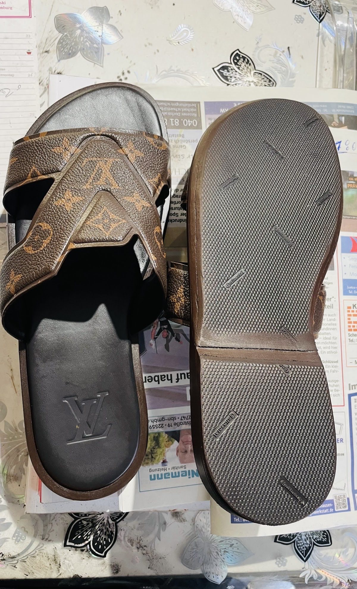
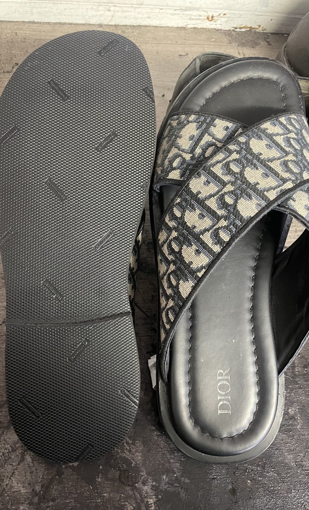
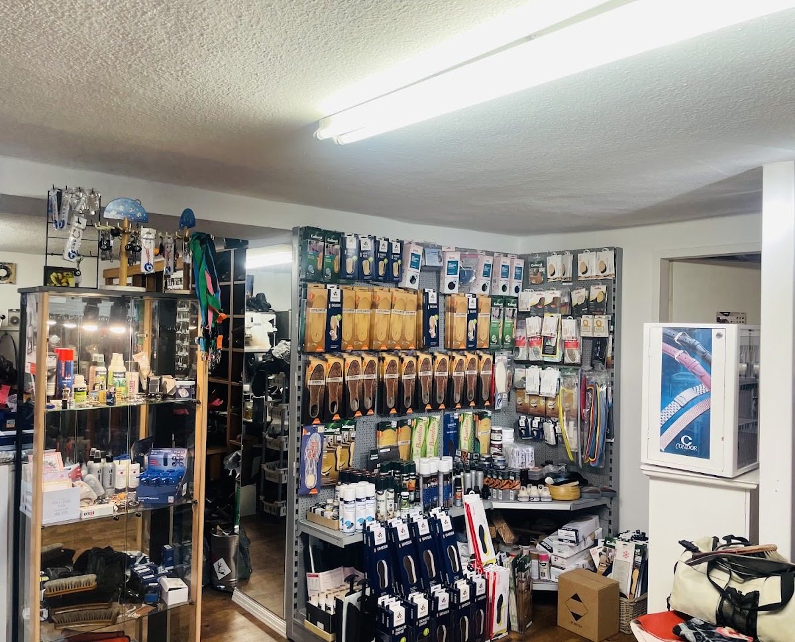
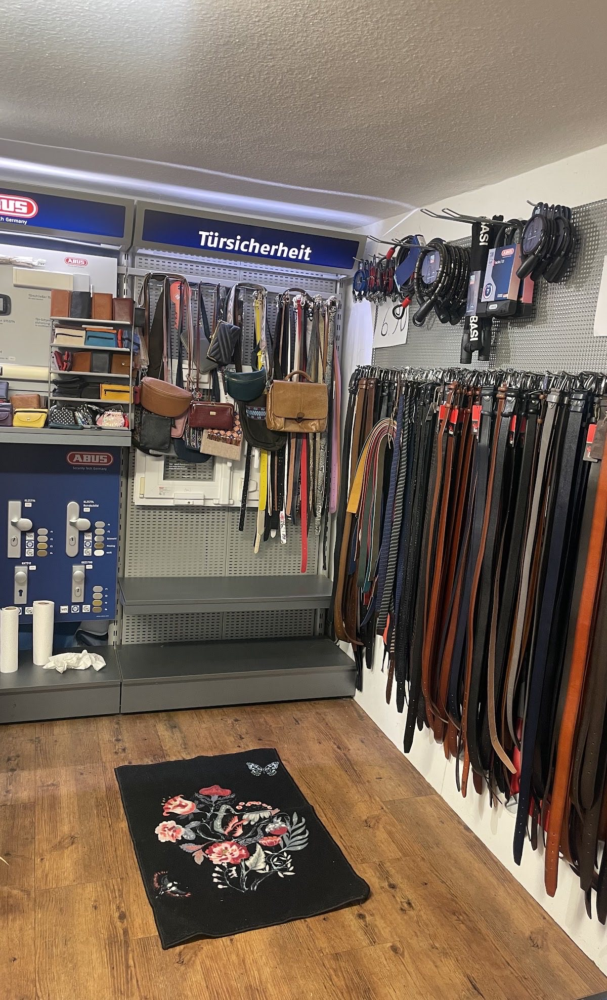

Wedeler Landstraße 21 · 22559 Hamburg
Mein Schuhmacher
Schuh- und Schlüsseldienst + Sicherheitstechnik

Heute · Montag
9:00–13:00 · 14:00–18:00
Ohne Termin vorbeikommen. Wir sehen uns das Teil an und sagen Ihnen direkt, was möglich ist und was es kostet.
Anrufen
Gute Schuhe wirft man nicht weg. Bei uns bekommen sie neue Sohlen und Absätze, geflickte Nähte und gepflegtes Leder. Dazu Schlüssel, Stempel, Gravuren, Uhrbänder und Sicherheitstechnik für die Wohnungstür — alles in einer Werkstatt in Hamburg-Rissen.
Leistungen
Was wir in der Werkstatt machen
-
Schuhreparatur
Vom Alltagsschuh bis zum Designerstück: aufgemacht, neu aufgebaut, geputzt. Wenn sich eine Reparatur nicht lohnt, sagen wir Ihnen das auch.
- Neue Sohlen und Absätze
- Fersen und Kappen
- Nähte und Risse
- Reißverschlüsse
- Weiten und Kürzen
- Pflege, Einlagen, Senkel
-
Schlüsseldienst
Schlüssel nachmachen — Wohnung, Haustür, Briefkasten, Fahrrad, Möbel. Auch Sicherheits- und Wendeschlüssel.
-
Stempel
Firmen-, Adress- und Sonderstempel nach Ihrer Vorlage. Auch neue Textplatten für vorhandene Stempel.
-
Kleinreparaturen
Taschen, Gürtel, Riemen, Jacken, Planen: genäht, genietet, geklebt. Wenn es hält, machen wir es.
-
Uhrbänder & Batterien
Armband wechseln, kürzen oder ersetzen, Batterie tauschen. Lederbänder und Metallbänder vorrätig.
-
Schilder & Gravuren
Namensschilder für Klingel und Briefkasten, Hundemarken, Gravuren auf Metall und Kunststoff.

Werkstatt & Laden
Ein Tresen, dahinter die Maschine
Bei uns geht nichts in ein Zentrallager. Die Schuhe bleiben im Laden an der Wedeler Landstraße, werden hier aufgemacht, aufgebaut und hier wieder abgeholt.
Im Verkaufsraum finden Sie außerdem, was zwischen zwei Reparaturen hilft: Einlagen und Fersenkissen, Cremes und Imprägnierung, Bürsten, Senkel, Gürtel und Taschen.
- Einlagen, Fersenkissen und Fußbetten
- Pflege, Farbe und Imprägnierung
- Gürtel, Taschen und Kleinlederwaren
Sicherheitstechnik
Damit die Tür zu bleibt
Schließzylinder, Schutzbeschläge, Türschließer, Zusatzschlösser und Fenstersicherungen — beraten, verkauft und montiert. Wir arbeiten mit ABUS und BASI.
Schlüssel verloren? Wir tauschen den Zylinder und schneiden die neuen Schlüssel gleich mit.
Beratung im Laden
Ablauf
In drei Schritten
-
01
Vorbeibringen
Ohne Termin, während der Öffnungszeiten. Bringen Sie beide Schuhe mit — auch wenn nur einer kaputt ist.
-
02
Ansehen & Preis nennen
Wir schauen uns das Teil am Tresen an, sagen Ihnen, was sinnvoll ist, was es kostet und wann es fertig wird.
-
03
Abholen
Fertig gemacht, geputzt und zurück. Bezahlt wird bei der Abholung im Laden.
Besuchen Sie uns
Wedeler Landstraße 21
22559 Hamburg
Öffnungszeiten
| Montag – Freitag | 9:00 – 13:00 14:00 – 18:00 |
|---|---|
| Sonnabend | 9:00 – 13:00 |
| Sonntag | geschlossen |
Kontakt
Rufen Sie an, wenn Sie vorher wissen möchten, ob sich eine Reparatur lohnt.
Im Laden
Schuhpflege und Einlagen, Gürtel, Taschen und Kleinlederwaren, Schlösser und Türsicherheit von ABUS und BASI.